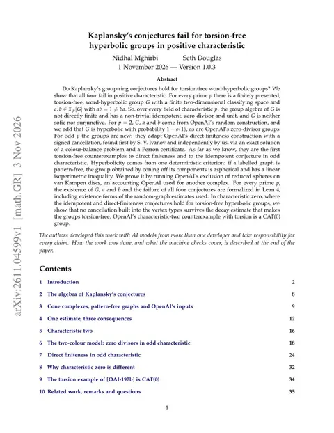

Nidhal Mghirbi and Seth Douglas give Lean-checked hyperbolic counterexamples to Kaplansky's conjectures
For every prime p, a torsion-free, word-hyperbolic group based on OpenAI's constructions fails all four group-ring conjectures in characteristic p; no torsion-free hyperbolic counterexample to any of them was previously known. Nidhal Mghirbi's Lean 4 formalization proves the main theorem, including existence forms of the random-graph estimates, and builds on OpenAI's Lean development.

Checked against: arXiv:2611.04599Apsiape/kaplansky-conjectures-hyperbolic-groups